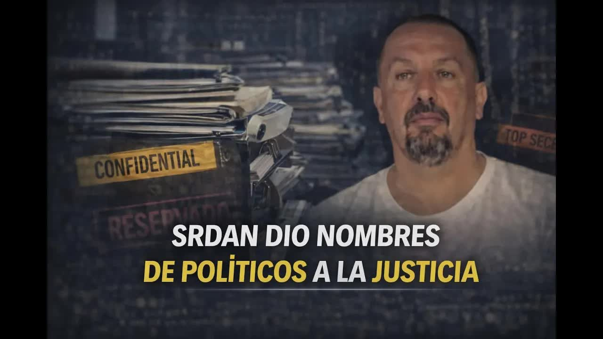
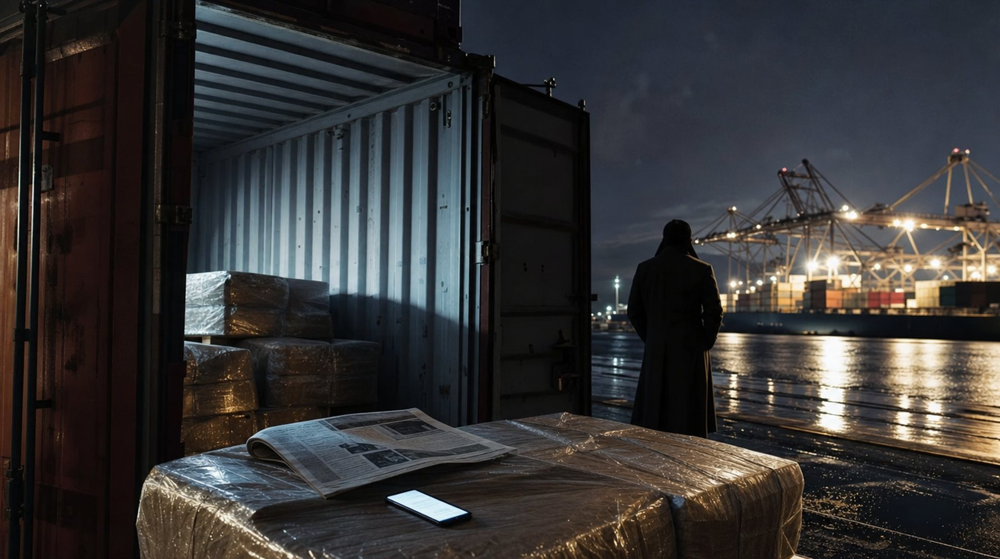
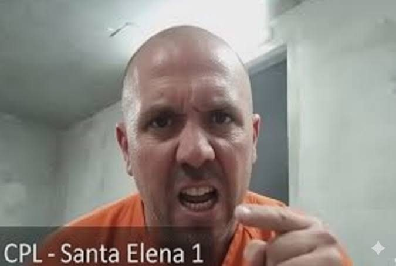
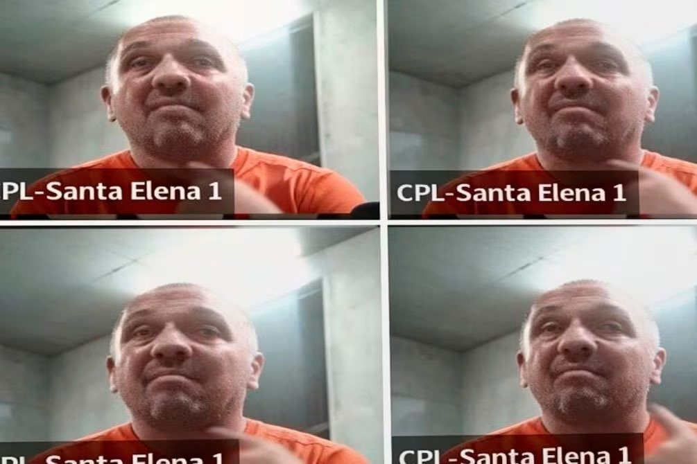
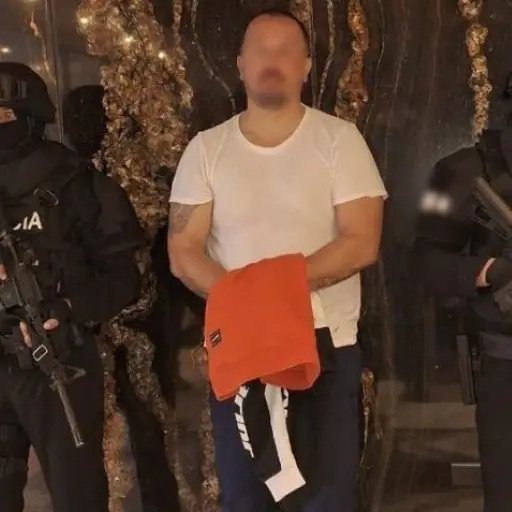
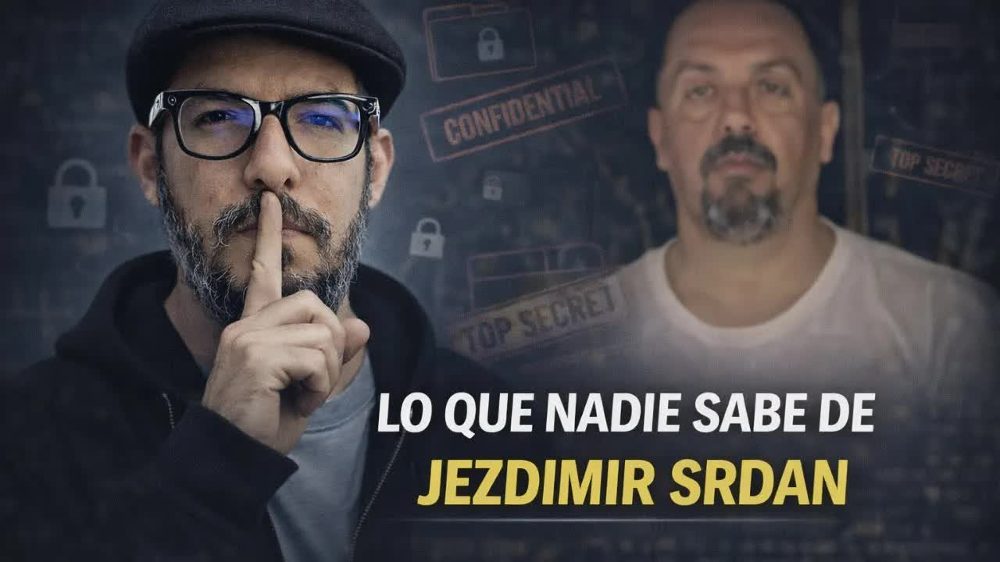

25 feb 2026 · La historia del serbio y la cooperación
Quinientos trece kilos de cocaína en un operativo de 2014, una condena de diecisiete años y una salida en libertad cuatro años después. Ese expediente volvió a abrirse con los chats de la aplicación Sky, una traducción para un sicario en Viena y una detención pedida desde Alemania. Acorralado, el serbio del caso firmó una cooperación eficaz con la Fiscalía: nombres de políticos y dinero en efectivo para campañas. De ahí salieron los audios que derribaron a Mario Godoy. Esto fue lo que contó el programa.

Quinientos trece kilos de cocaína con destino a Europa y un teléfono satelital. Eso le encontraron en septiembre de 2014, en el operativo Oro Blanco. La Corte Nacional de Justicia lo condenó a 17 años y 4 meses y en 2018 salió libre. Volvió al negocio con Sky, la aplicación cifrada de la mafia balcánica, y en marzo de 2020 apareció en los mensajes de un intento de asesinato en Viena: le traducía al sicario colombiano la ubicación de la víctima, las rutas de escape y cómo deshacerse del arma. Francia interceptó Sky, la Policía alemana le mandó los chats a la Fiscalía ecuatoriana y le dijo cómo detenerlo. Acorralado por el narcotráfico y el lavado, firmó una cooperación eficaz: dio nombres de políticos y declaró haber entregado dinero en efectivo para campañas. Qué dijo de cada uno sigue bajo reserva de la Fiscalía.

CPL Santa Elena 1Para entender el caso hay que entender quién es. Serbio-bosnio, nacido en 1979, vivió la guerra de Bosnia entre 1992 y 1995 con 15 o 16 años. Sus compañeros de prisión de 2014 le contaron a Boscán que necesitaba pastillas casi a diario para dormir y que prefería el suelo o una esquina antes que una cama. Alto, fornido, intimidante. Habla al menos cinco idiomas: serbio, bosnio, español, inglés y uno más. Se casó con una abogada.
Llegó al país alrededor de 2012. Su padre había ganado en Europa un juicio contra unas tiendas duty free de Bosnia y la sentencia le dejó cerca de cuatro millones de dólares. La idea de la familia era invertir en bananeras y exportar a Serbia. Srdán se presentaba como un deportista exitoso con contactos en la política y la economía de su país. Boscán no pudo confirmar esos contactos, pero constan en las declaraciones que hay sobre él en Ecuador, Alemania, Austria y Francia, los países donde ha tenido investigaciones.
El proceso demoró. En octubre de 2015 lo sentenciaron a seis años como cómplice. En enero de 2017 la Corte Nacional de Justicia corrigió: 17 años y 4 meses. En 2018 el juez Roca redujo la pena a diez años con prelibertad y ese mismo año, con María Paula Romo en el Ministerio del Interior, el juez Martínez extinguió la pena y lo liberó. No podía salir del país: tenía una difusión roja de Interpol y temía que lo capturaran en otra parte. Se quedó en Ecuador.
La gente entra por un delito y sale con un PhD en criminología.
Andersson Boscán, 25 de febrero de 2026
Entre 2019 y 2022 volvió a ser productivo en la calle. Ya no solo con los contactos de Serbia que lo llevaron a la cárcel, sino con la gente que conoció en prisión. En 2019 empezó a usar Sky.
Cada mafia tiene su aplicación secreta. Los mexicanos y los ecuatorianos usan Sanji; los albaneses y los balcánicos, Sky. Sky tenía apenas 70.000 usuarios registrados y casi todos eran narcos. Francia interceptó la red entre 2020 y 2021, capturó cerca de un millón de mensajes y dejó hablar a los usuarios casi dos años antes de empezar a procesarlos. Srdán era uno de ellos.

En el medio pasó algo en Austria. En marzo de 2020 hubo un intento de asesinato en Viena contra un capo de la mafia balcánica. El plan lo organizaron Stefan Kovac y Risto Milanovic, de un clan de Montenegro. Contrataron sicarios y el principal era John Alexander Zapata Zuluaga, colombiano, que solo hablaba español. Srdán, que habla cinco idiomas, fue contratado como traductor. La Policía europea tiene los mensajes en los que traduce al colombiano la ubicación de la víctima, las rutas de escape, los vehículos que debía usar y cómo deshacerse del arma.
El ataque fue el 11 de marzo de 2020 y falló por problemas de comunicación: el sicario no entendió, el objetivo escapó y la Policía los descubrió. Austria emitió una orden de detención contra Srdán, a quien identifica con el alias Setović Milenko, por tentativa de asesinato. Kovac y Milanovic, los que ordenaron el crimen, fueron asesinados después en Austria.
El caso ecuatoriano nació de esa cooperación policial. Fue la Policía alemana la que envió a la Fiscalía ecuatoriana los chats reservados y le dijo cómo detenerlo. Durante un año el expediente estuvo en manos de un fiscal de apellido Rosero, a quien las fuentes de Boscán describen como honesto, y fue él quien llegó a la identidad de Srdán. Lo identificaron por su PIN de Sky y por un error de principiante: usaba una aplicación secreta, pero se tomaba fotos y las enviaba. Investigaron al de la foto.
Al público lo presentó Felipe Rodríguez, hacia el 5 de diciembre de 2025, en una columna titulada Los valientes están solos, como el libro de Roberto Saviano sobre el juez Giovanni Falcone. Contaba que el juez Carlos Serrano había sido amenazado en una audiencia por un narcotraficante serbio y que el Consejo de la Judicatura, en especial Mario Godoy, había descuidado esa amenaza: emisarios de la Judicatura habían ido a pedirle por Srdán. Boscán se lanzó el mismo día y el 21 de diciembre de 2025 publicó los audios de un emisario de la Judicatura presionando al juez Serrano para liberar a Jezdimir Srdán. Ahí se supo el nombre del caso, Euro 2024: Srdán había admitido su pena por narcotráfico y disputaba la de lavado de activos.
Lo que pasó bajo el radar hasta enero de 2026 es que Dolores Vintimilla, esposa de Godoy, era abogada de Srdán. El mismo día del allanamiento y la detención por narcotráfico, según la información que recopiló Boscán, Vintimilla le comunicó que no podía seguir defendiéndolo: su prometido de entonces, Mario Godoy, iba a ser formalmente presidente de la Judicatura y un caso de narcotráfico la ponía en una posición incómoda. Renunció ese día, no sin antes cobrar lo adeudado.
Srdán tuvo que buscar abogado ese día y enterarse por qué lo investigaban. Era por lavado: tenía camaroneras, propiedades, un patrimonio importante y un préstamo de alrededor de un millón y medio de dólares de una empresa alemana que la Fiscalía sospecha que no es préstamo. Con el narcotráfico y el lavado juntos, la Fiscalía le mostró los chats de Sky. Los presentes en la diligencia le contaron a Boscán que hubo sorpresa en su cara: era él, se había tomado las fotos, no podía negarlo.
Semanas después la Fiscalía explotó sus dispositivos y encontró que Srdán tenía una estructura montada en la Policía que le avisaba de las investigaciones en su contra, por dónde lo iban a seguir y qué carros estaban destinados a su seguimiento. En el teléfono estaba el seguimiento de la droga: videos de los paquetes puestos en los contenedores, con un periódico del día encima como prueba de fecha, y las pruebas de recepción al otro lado del océano.
Cuando la policía quiere probar que tú eres narco, importa más la droga que no pasó que la que pasó.
Andersson Boscán, 25 de febrero de 2026
En los chats Srdán hablaba de cargamentos caídos, y eso es lo que sirve para acusar. El informe policial determinó que perdió al menos dos contenedores controlados por la aduana en el puerto de Amberes. En el expediente constan tres: el MEDU 9137281, de 2020, incautado con 45 kilos de cocaína, transportado desde Guayaquil; otro con 488 kilos, el 4 de febrero de 2021; y un tercero, también en Amberes. Boscán iba por el cuerpo 200 de un expediente que, dijo, ningún periodista había leído entero.
Esa semana El Universo publicó que en los chats había menciones a dos políticos. En una conversación de 2021 entre Srdán y alias Odín, Naula, su hombre de confianza, aparecía Andrés Arauz como alguien a quien se le cedía un carro, y una fotografía de Francisco Jiménez con la frase también contamos con este. La lectura de la nota, basada en la investigación policial, es que la mafia balcánica apostaba en 2021 a UNES, el correísmo, y a CREO, el movimiento de Guillermo Lasso, que ganó esas elecciones.
Ojo con las palabras que escojo: menciones, no relación.
Andersson Boscán, 25 de febrero de 2026
Lo que nadie había dicho, y Boscán y Mónica Velásquez confirmaron con múltiples fuentes policiales y judiciales, es que Srdán firmó una cooperación eficaz con la Fiscalía ecuatoriana. Ya habló ante la Justicia. En esa cooperación hay nombres de políticos ecuatorianos, entre ellos Andrés Arauz y Francisco Jiménez, y nombra a más gente. En la información que entregó consta haber dado dinero en efectivo para campañas. Para campaña de quién, de qué los acusa, con qué pruebas: eso sigue reservado. La cooperación fue autorizada por Diana Salazar, que no llevaba el caso pero aprobaba personalmente ese tipo de acuerdos.
Una cooperación eficaz en Ecuador significa cuatro cosas. Primero, el cooperador asume la culpa de un delito. Segundo, entrega información sobre la estructura del delito que sea de interés de la Fiscalía. Tercero, es reservada, y de momento lo es. Cuarto, la Fiscalía puede premiarlo con hasta un 90 por ciento menos de pena: si le tocaban diez años, uno. Lo dicho tendrá que acreditarse en audiencia con mensajes, fotos, videos o documentos.
Con el dinero de un juicio ganado por su padre en Europa, unos cuatro millones. La idea era invertir en banano.
Detenido con 513 kilos de cocaína con destino a Europa y un teléfono satelital. Un año antes ya tenía una indagación previa.
La primera sentencia, de octubre de 2015, le dio seis años como cómplice. La Corte Nacional la sube a 17 años y 4 meses.
El juez Roca reduce la pena a diez años con prelibertad; el juez Martínez la extingue y lo libera. Se queda en Ecuador por la difusión roja de Interpol.
Empieza a usar la aplicación cifrada de la mafia balcánica con contactos hechos en prisión. Francia interceptará a sus 70.000 usuarios.
Falla el intento de asesinato para el que tradujo instrucciones al sicario colombiano. Austria lo busca por tentativa de asesinato.
Con Sky interceptada, caen en Amberes 45 kilos en 2020 y 488 kilos el 4 de febrero de 2021, salidos de Guayaquil.
Alemania entregó los chats a la Fiscalía; el fiscal Rosero lo identifica por su PIN. El día de la detención, Dolores Vintimilla renuncia a su defensa y cobra 42.000 dólares para el estudio Invictus.
Boscán y Velásquez confirman la cooperación eficaz, autorizada por Diana Salazar, con nombres de políticos y efectivo para campañas.
Orden emitida por la tentativa de asesinato de Viena. Serbia no lo requiere; en Austria, dice Boscán, su vida corre peligro.
Lo dicho tendrá que acreditarse en audiencia con mensajes, fotos, videos o documentos. Para qué campañas fue el dinero y de qué acusa a cada uno sigue reservado.
Arauz y Jiménez han negado rotundamente conocer a Srdán, tener relación con él o haber recibido su dinero. Arauz atribuyó las menciones a sus posiciones políticas; Boscán no logró contactarlo. Jiménez sí respondió, la noche anterior al programa.
Buenas noches, Andersson. No conozco a ese señor, no tengo registro de que me haya contactado y tampoco he recibido jamás financiamiento de personas extrañas a mi entorno.
Francisco Jiménez, mensaje a Andersson Boscán, 24 de febrero de 2026
Boscán discrepa de la Policía y la Fiscalía, que presentan a Srdán como el gran capo balcánico en Ecuador. En el expediente da instrucciones a muy poca gente, entre ellos a Odín, Naula, su operador principal y empleado, el que habla del carro de Arauz y del asambleísta Jiménez. Srdán hacía de traductor y de intermediario: compraba al productor y vendía al comprador balcánico. Trabajaba para alguien con más y mejores contactos, un serbio-ecuatoriano de apellido Kolaković, que salió de prisión y a quien ni la Policía ni la Fiscalía buscan. En la estructura están también un albanés, Perparim, y alias Pantera, cuya identidad se desconoce.
Pantera importa porque tiene el contacto directo con el coronel Chávez, probablemente un alias: el alto mando de la Policía Nacional que, según el expediente, disponía a las unidades de puertos cómo, cuándo y dónde contaminar los contenedores. La mafia balcánica en Ecuador es eso, un equipo de contaminación de contenedores: la droga producida por los carteles, custodiada por grupos de delincuencia organizada ecuatorianos, sube a contenedores y sale hacia Amberes, principalmente, y también hacia Rotterdam y otros puertos europeos.
Reconstrucción a partir del expediente fiscal que Boscán leyó al aire. Iba por el cuerpo 200.
El caso Srdán no terminó con Srdán. El narcotraficante serbio provocó la caída de Mario Godoy de la presidencia del Consejo de la Judicatura, hoy en manos de Damián Larco. El 24 de febrero de 2026 el pleno de la Judicatura destituyó por unanimidad a dos jueces de la unidad anticorrupción implicados en el caso Fachada, Gabriela Lara Tello y Cristian Quito, investigados por favorecer al líder de los Comandos de la Frontera; a Lara le habían encontrado unos 90.000 dólares en una caja de zapatos. Boscán venía denunciando desde diciembre que Lara había fallado a favor de los intereses del narcotraficante serbio. El tercer juez del caso, Jairo García, sigue en su puesto.

Srdán sigue detenido en Ecuador con una orden de extradición a Austria por tentativa de asesinato. Su cooperación eficaz está firmada y bajo reserva. La Fiscalía tendrá que levantar el sigilo en algún momento y él tendrá que acreditar en audiencia lo que dijo. Boscán sabe quiénes estuvieron en esa diligencia. Anunció que seguiría leyendo el expediente con Mónica Velásquez y que mostraría las conversaciones.
Lo más importante, resumió, está en manos de la Fiscalía: los chats donde policías ecuatorianos informan al narcotráfico de las investigaciones y donde altos mandos les dicen a los narcos cómo, cuándo y dónde contaminar los contenedores. Kolaković, Pantera y el coronel Chávez son los nombres que habría que mirar si el país quiere desmontar la estructura. Nadie los está buscando.
Srdán no era el gran capo de la mafia balcánica, sino su traductor e intermediario. Y ha firmado un acuerdo de cooperación con la Fiscalía.
Andersson Boscán, 25 de febrero de 2026
Actualizado el 5 de septiembre de 2026
Serbio-bosnio. Vive la guerra de Bosnia (1992-1995) con 15 o 16 años.
Con el dinero de un juicio ganado por su padre en Europa, unos cuatro millones. La idea era invertir en banano.
La Policía ya lo tiene en la mira un año después de llegar.
Detenido con 513 kilos de cocaína con destino a Europa y un teléfono satelital.
Seis años como cómplice.
La Corte Nacional de Justicia lo condena a 17 años y 4 meses.
El juez Roca reduce la pena a diez años con prelibertad; el juez Martínez la extingue y lo libera. Se queda en Ecuador por la difusión roja de Interpol.
Empieza a usar la aplicación cifrada de la mafia balcánica. Vuelve al negocio con contactos de prisión.
Falla el intento de asesinato para el que tradujo instrucciones al sicario colombiano. Austria lo busca por tentativa de asesinato.
Casi un millón de mensajes de 70.000 usuarios. Caen contenedores en Amberes: 45 kilos en 2020, 488 kilos el 4 de febrero de 2021.
Conversaciones con alias Odín mencionan a Andrés Arauz y a Francisco Jiménez. La mafia apuesta a UNES y CREO.
Alemania entregó los chats a la Fiscalía; el fiscal Rosero lo identifica. El día de la detención Dolores Vintimilla renuncia a su defensa y cobra 42.000 dólares para el estudio Invictus.
Felipe Rodríguez cuenta en su columna que el juez Carlos Serrano fue amenazado por el serbio y que la Judicatura de Godoy mandó emisarios a pedir por él.
Boscán publica los audios de un emisario de la Judicatura presionando al juez Serrano para liberar a Srdán.
Se conoce que Vintimilla, esposa de Godoy, fue abogada de Srdán. Godoy cae de la Judicatura.
Publica las menciones a Arauz y Jiménez en los chats de Sky.
La Judicatura de Damián Larco destituye a Gabriela Lara y Cristian Quito, jueces del caso Fachada.
Boscán y Velásquez confirman la cooperación eficaz de Srdán, autorizada por Diana Salazar, con nombres de políticos y efectivo para campañas.
Serbio-bosnio, 46 años. Alias Brate. Traductor e intermediario de la mafia balcánica en Ecuador. Cooperador eficaz.
Expresidente del Consejo de la Judicatura. Socio del estudio Invictus, que cobró 42.000 dólares de Srdán.
Abogada de Srdán hasta el día de su detención. Esposa de Godoy.
Juez amenazado por Srdán en audiencia y presionado por emisarios de la Judicatura para liberarlo.

Exfiscal general. Autorizó la cooperación eficaz de Srdán.
Excandidato presidencial. Mencionado en los chats por un carro y nombrado en la cooperación.
Asambleísta. Mencionado en los chats con una foto y nombrado en la cooperación.
Operador principal y empleado de Srdán en Ecuador. Pedía el dinero para las relaciones políticas.
Jueza anticorrupción. Boscán denunció que falló a favor del serbio. Caso Fachada.
Abogado y columnista. Su columna Los valientes están solos destapó la amenaza al juez Serrano.
Fotos vía Wikimedia Commons. Diana Salazar: Cesargoza (CC BY-SA 4.0).
Ha negado públicamente cualquier cercanía o relación con Srdán, haber recibido dinero o usado vehículos suyos, y atribuye las menciones a sus posiciones políticas. Boscán intentó contactarlo sin éxito.
Respondió por mensaje la noche del 24 de febrero de 2026: no conoce a ese señor, no tiene registro de que lo haya contactado y jamás ha recibido financiamiento de personas extrañas a su entorno.


De eso va la historia de esta de esta mañana. Será ha dado nombres. Ha dado nombres. Para hablar entonces del caso Serjan. Hay que entender quién es Serjan. Y yo llevo días h recopilando información, intentando entender quién es, cómo operaba y entonces creo que tengo suficiente como para hablar con ustedes. Serjan, que se llama Serjan, no Jestimir Seryan. La gente cree que Serjan es el apellido. En realidad es Serja…
Leer la transcripción completaque le pasa a casi todas, salvo las de muy mala suerte, que se consiguen uno que es todo en uno, es vago, patán e infiel al mismo tiempo. Sino que realmente se casó mal, se casó con alguien que cuando empezaron a vivir juntos hacía cosas que no hacía cuando eran novios. O se dejó ver. Y recibía visitas raras. Y recibía sobres en efectivo. Y maletas con efectivo. Y cajas con efectivo. Y movía tanta tanta plata que lle…
Leer la transcripción completaTranscripciones de los subtítulos automáticos de cada programa. No están corregidas a mano: sirven para buscar una frase y llegar al minuto exacto del video, no como cita textual literal.
El caso del serbio, la presión al juez Serrano y los honorarios de Invictus terminaron con Mario Godoy al frente de la Judicatura.
Los nombres que dio Srdán y el dinero para campañas esperan que la Fiscalía levante el sigilo y que él los acredite en audiencia.
El relato de esta ficha se construyó solo con lo dicho al aire el 25 de febrero de 2026; las fuentes públicas añadidas al final sirven para contrastarlo, no lo modifican. El programa pronuncia el apellido Serján; el título del video lo escribe Srdán y la descripción, Srdan. Boscán aclara que Srdán es el nombre de pila y Jezdimir el apellido. Los nombres de los serbios, montenegrinos y albaneses de la estructura se escriben como los lee Boscán del expediente. La cooperación eficaz sigue bajo reserva: lo que Srdán dijo sobre cada persona no se conoce.